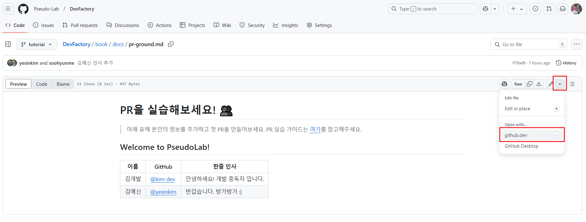
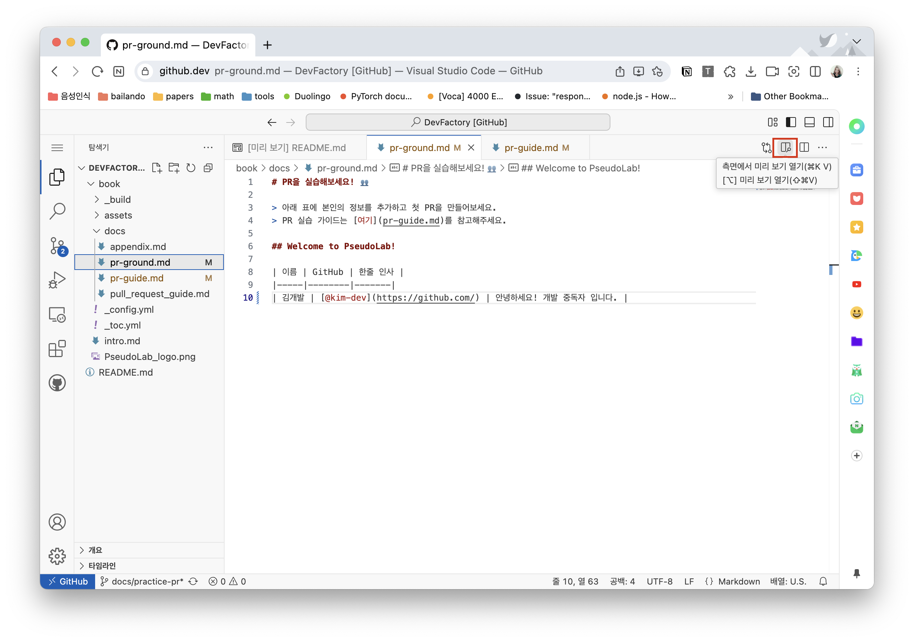
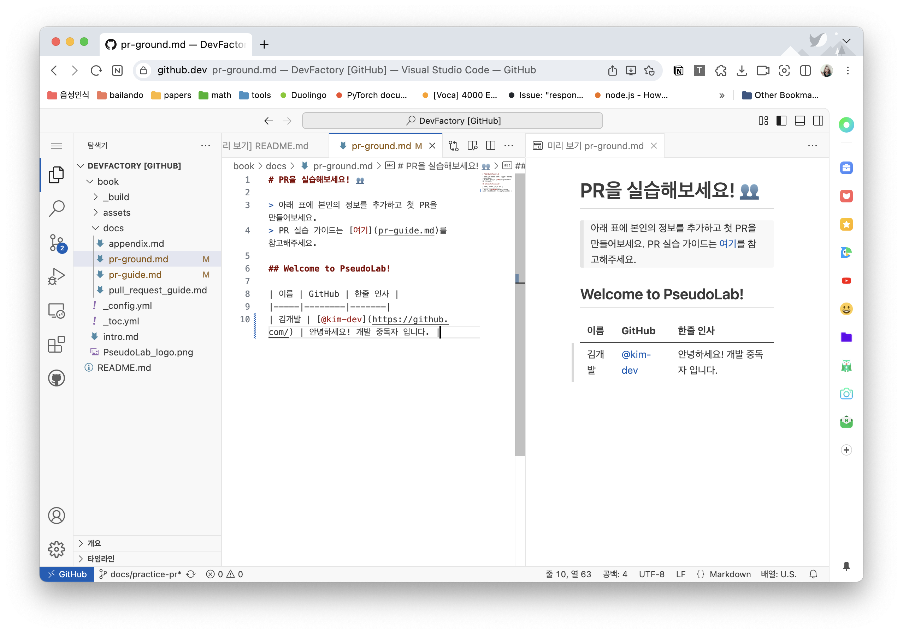
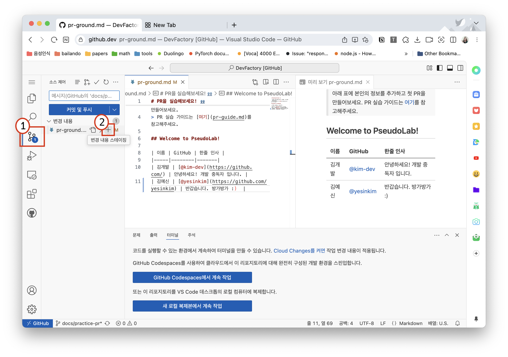
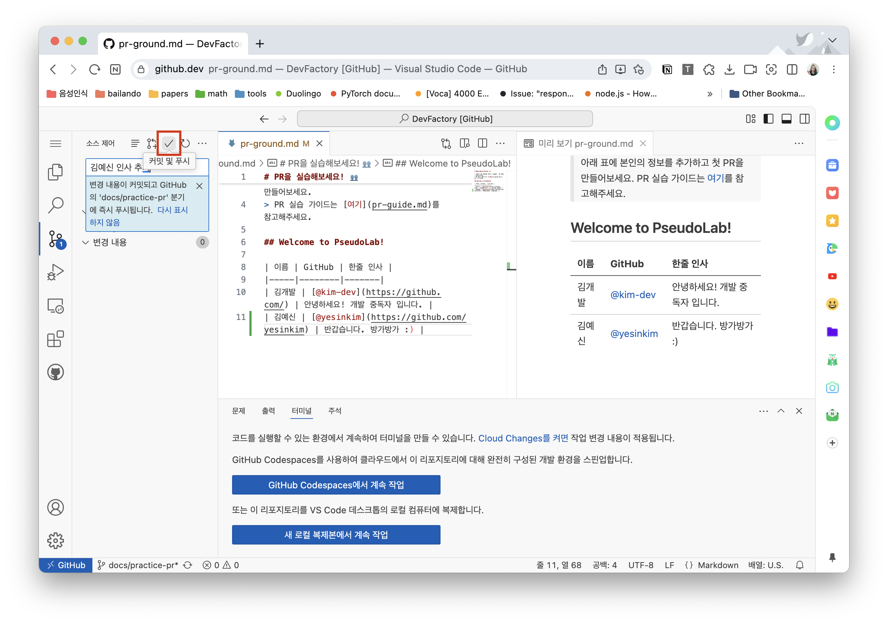

Github.dev 편집기로 작업하기 🚀#
아래의 가이드를 따라하면서 직접 PR을 올려보아요!
실습 가이드
이 가이드는 DevFactory 리포지토리를 fork하여, IDE 환경에서 진행하는 것을 전제로 작성되었습니다.
자세한 fork 방법은 이 문서를 참고하세요.
Github.dev 편집기 실행하기

0. 미리보기 화면 세팅하기 (Optional)#
book/docs/ground.md 파일을 열어 참여자 목록 테이블에 자신의 정보를 markdown으로 작성해주세요.
오른쪽 상단의 미리보기 버튼을 클릭하면 작성한 Markdown이 어떻게 보이는지 확인할 수 있습니다.

작업화면 오른편에 미리보기 화면이 생겼습니다! 
1. 한줄 인사 작성하기#
아래 양식을 참고해 작성해보세요!
| 이름 | GitHub | 한줄 인사 |
|-----|--------|-------|
| 김개발 | [@kim-dev](https://github.com/) | 안녕하세요! 개발 중독자 입니다. |
2. 변경사항 추가하기#
아래 처럼 변경사항을 작성했습니다. 1번을 눌러 코드 관리 툴에 접근해 2번 버튼으로 변경 사항을 추가해주세요.

4. 커밋 및 푸시하기#

5. Pull Request 생성하기#
GitHub에서 Pull Request를 생성합니다. PR 제목과 내용을 작성하고 ‘Create pull request’ 버튼을 클릭합니다.
TIP
PR 제목은 명확하게, 내용은 상세하게 작성해주세요. 변경사항에 대한 설명과 함께 리뷰어가 이해하기 쉽도록 작성하면 좋습니다.